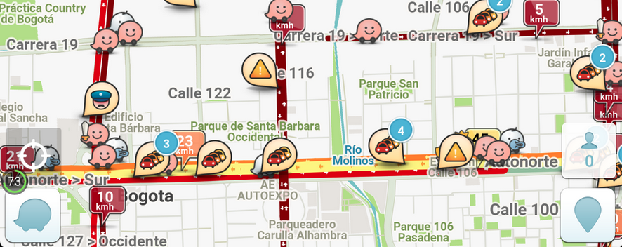

Una App no es una Startup
Recientemente se ha popularizado la expectativa de que hacer una app es una estrategia fácil para generar un negocio o una fuente de ingreso adicional. El aparente bajo costo de la producción de este tipo de tecnologías y las múltiples historias de gente que obtuvo un retorno N veces mayor a su inversión han extendido esta creencia de forma errónea. Incluso recientemente, el gobierno colombiano implementó un proyecto institucional de gran envergadura llamado apps.co, en el cual apoyan y …
- Una App no es una Startup
Como (no) usar tecnología para escribir más
En la reciente misión voluntaria de escribir diariamente una entrada, me estrello con una dura realidad: de repente todas las observaciones e insights que tenía sobre cientos de temas se me borran de la mente, y sólo queda la ventana del explorador blanca y vacía, como un obstáculo enorme y poco generoso con las primeras líneas que se atreven a aparecer. Entonces se me ocurre algo: será que es posible recurrir a la tecnología para superar la inercia estacionaria y …
- Como (no) usar tecnología para escribir más
¿Por qué no escribir más en español?
A pesar de contar con uno de los idiomas más hablados en el mundo, es sorprendente lo poco que escribimos los hispanos: desde contribuciones a wikipedia hasta "reviews" de artículos en tiendas en línea, parece ser que los parlantes de otros idiomas tienden a generar y compartir mucha más información escrita. ¡Más italiano que español! Y el polaco casi nos alcanza :/ Quizás se deba a que tenemos una fuerte tradición oral y aprendemos de otras formas (no todos los pueblos …
- ¿Por qué no escribir más en español?
¿De verdad es tan difícil emprender en Colombia?
Hace un par de años vi una entrada de blog sobre "lo difícil que es crear empresa en Colombia", y desde entonces me había preguntado: ¿es realmente tan difícil?, o ¿será que hay algo que no sabemos? Ignorando algunas imprecisiones monumentales (como que el impuesto de renta se calcula sobre la utilidad, no sobre las ventas), pues de hecho considero sumamente valioso que el autor haya compartido sus pensamientos, he decidido compartir también aquí algunas de las observaciones que me …
- ¿De verdad es tan difícil emprender en Colombia?